Style: Owner-selected rendered composite cover retained. Group, bubbles and castle cues describe the friendship-cleaning story in the established color style.
Words:
Background: Complete rendered composition
Object-by-object review and source evidence
Roshan · 4.8/5: Accepted cover family has shell brooch rather than simple interior top; crisp expressive face, proper two arms and tail.
Daddy · 4.9/5: Glasses/crown/cape/coat/rainbow tail stable; human hands complete.
Rumi · 4.8/5: Rounder youthful face than runtime atlas, but purple segmented braid, costume and tail preserve identity; owner accepted cover.
peeking Puff · 4.9/5: Spiral ears/forehead curl and pearl limbs recognizable in door.
unified cover composition · 4.9/5: Rendered ensemble and props share light/contact; no pasted rectangle or scenic crop.
Before SHA256: 608206aa4813208d3599be36cb3bba0f111dd5e4c9f1ddc65a61021feb61308e After SHA256: 608206aa4813208d3599be36cb3bba0f111dd5e4c9f1ddc65a61021feb61308e
Style: Roshan and Daddy remain child-readable within full art. Small white caption has continuous navy separation in the upper-right sky lane.
Words: “Look, Daddy!
Pearl Castle!”
Background: full scene
Object-by-object review and source evidence
Roshan profile · 4.9/5: Large clean face, crown, rainbow hair and five-finger window gesture; no identity/anatomy defect seen.
castle and window · 4.9/5: Crisp framing and intact castle; full-art page.
caption · 4.9/5: White letters with shadow read clearly against dark teal lower window frame.
Before SHA256: 9ec9b6f5df89bf8bcbea2acd0489c924f248af6db4615a365b8172ea87548761 After SHA256: 00f232e661553f613eefb4419bf8ad60b71571616e92995edad2720162a13d82
Style: Landing scene retained. Navy caption has its own calm lower-left lane and clears both tails.
Words: Roshan and Daddy landed at Sky Lagoon.
Pearl Castle was close by.
Background: full scene
Object-by-object review and source evidence
plane · 4.9/5: Rounded plane geometry and shell motif continuous, no tear/seam.
castle/pier · 4.9/5: Crisp whole objects at page trim; character in stained glass is decorative, not duplicate live character.
caption · 4.9/5: Navy on quiet blue sky with good clearance.
Before SHA256: 89380abd85fa67129f96b08775a74cb2bd5de55b7f183c359398bd36ea924ce9 After SHA256: 58e7e348fcffaa17b119de207bbd02be6406e00093f4af817211a41f608be428
Story page 3 F · internal minimum 3.8 → 4.9/5
Before · frozen V28After · current V29
Style: Single coherent dirty-castle entry scene, with no doubled window or door seam visible. Final navy caption begins at x268pt in a 206pt lane on the bottom-right floor, clearing Roshan's fin envelope and both figures while retaining legibility.
Words: “Let’s look inside,
Daddy,” said Roshan.
Background: Existing Grok frame at4seconds: Roshan and Daddy at open doors, dirty interior visible. Full-art left-anchored trim preserves both characters and the threshold; no generated wall pixels.
Object-by-object review and source evidence
Roshan/Daddy · 4.9/5: Native restoration holds original threshold action, identities and two-arm topology; no crushing/soft character crop.
doors/windows/threshold · 4.9/5: Final sharper entry retains source action and dirty interior. No doubled window directly over Daddy and no visible door seam.
caption · 4.9/5: Final navy two-line caption moved to x268 with width206. Both lines read on lower-right open floor, 12 points right of the conservative fin boundary and below head/body/arm regions; no character strokes obscured.
Before SHA256: 854773a9f9ff6062d677a25848355d74b11c0d804545cf23a81a661a9fc9423f After SHA256: 4829f7c05c29f3da15ba63513c93a597d6873e700f5df29cb71af916f47f75e2
Style: Dirty interior and shared cleaning goal are explicit. Lower-right white caption now has navy contours across carpet/floor; it clears Roshan and Daddy.
Words: Inside, dust covered the floor.
“Let’s clean it together!”
said Roshan.
Background: dirty castle interior
Object-by-object review and source evidence
Roshan/Daddy · 4.8/5: Two arms/tails and identity intact. Small retained front-facing Roshan pose remains comparatively rigid; source family/action is preserved.
caption · 4.9/5: Final white caption with thin navy contour sits on lower-right red rug and pale floor, leaving chandeliers and column crossings clear. All three lines read distinctly.
Before SHA256: 8dc8a21acbe76ea553837c1a3942b8888057227b0dc06cf0ed474f26433ee8c8 After SHA256: 19baad86ba27f35bd79cb778eec0a18883b23a9fc552c0c8689328a3e5094f67
Style: Useful asymmetric starter bank: curious basket bunny and towel supplies on the left, soap dish/pump on the right. Neither repeats the main brush or sponge.
Words: Daddy gave her a brush and a sponge.
“One little job at a time.”
Background: Eager bunny peeks from supply basket; bath accessories remain ready without duplicating main brush/sponge.
Object-by-object review and source evidence
brush/star sponge · 4.9/5: Clean large contourcutouts, no square fields or alpha halos.
bath accessories/perimeter · 4.9/5: Small towel basket, soap/pump grounded; navy rings closed/crisp, theme relevant without main-prop duplication.
caption · 4.9/5: Quiet aqua writing field and large Sniglet.
Before SHA256: 887e21a5ba22bb6ce48dd33fc1a270c9db9aad1acef18bb961129660a4ef9552 After SHA256: 9e812bc5a78f1579a77e68519714cd474e11733c9b5f87038bd661ca22a51206
Style: Final local floor repair replaces the hard upper-right mask edge. Natural grout, tub rim, puddle contours and shaded stone connect. Outlined white text is clear without a plaque or bar.
Words: A dust bunny splashed in the dirty bath.
It loved to play. Splash, splash!
Background: full scene
Object-by-object review and source evidence
swimming bunny · 4.9/5: Canonical spiral ears, forehead curl, cloud silhouette and pearl hands; animated splash action.
dirty bath/sink · 4.9/5: Final local floor repair follows grout and tub-foot contours. Previously abrupt upper-right mask boundary is gone; grime and room staging remain.
caption · 4.9/5: White text with thin navy contour on the calmer lower floor reads clearly without a scenic crop or opaque panel.
Before SHA256: 1a7bc175c1f71e7dd9e7344ae022a263b18425723cad19808269c7c900164f72 After SHA256: f20e6c719137455c287f03df2747b44b71de18bc1732d8cfa0404934b7576b8b
Style: Mirror bunny gives this sink page a distinct comic detail. Small glints stay low. Foreground cleaning action and text remain dominant.
Words: Round and round went the sponge.
Roshan wiped the sink clean.
Background: Little bunny enjoys clean reflection, with folded towel and soap dish grounding the sink-clean moment.
Object-by-object review and source evidence
Roshan/sink action · 4.9/5: Two arms, real hand-to-sponge/basin contact and clean contourisolation.
mirror bunny · 4.9/5: Canonical little bunny looks into mirror; mirror tiny but identifiable.
towel/soap/perimeter · 4.9/5: Grounded small details, closed ring rims; caption area remains clear.
caption · 4.9/5: Dark Sniglet on quiet aqua.
Before SHA256: a2d325824dd1abdb92b0f71cfa69415c91bba3df719de3ef3e5a0fcfc2839768 After SHA256: 44ce7bcc8d1b93bcd8e7cc49a0fc80e3109a85bc90a3084b09509623b48b4dbb
Style: Duck interaction, plug/chain and rolled towel explain the emptied bath. Brush action is visible and the cutout follows authored contours.
Words: Roshan let the dirty bath water out.
Then she scrubbed the tub. Scrub, scrub!
Background: One gentle bunny nudges duck; bath plug and rolled towel show emptied bath and cleaning context.
Object-by-object review and source evidence
Roshan/tub brush contact · 4.9/5: Brush held by fingers with bristles meeting gunk; emptied tub state readable.
duck bunny · 4.9/5: Canonical bunny nudges duck in tiny ripple; playful without taking main focus.
towel/plug/perimeter · 4.9/5: Plug/chain connects directly to drained bath beat; small props ground cleanly.
caption · 4.9/5: Large dark type and clear field.
Before SHA256: 7a9bb5fb09d67ff6693cb5e6039daa2554f24f9d6b81dfd2b44e88824fed9557 After SHA256: e6584998fdd2123e541b17633ee60ae85b2625ad3b2c736bb0250d4215018adb
Story page 9 F · internal minimum 4.6 → 4.9/5
Before · frozen V28After · current V29
Style: Refilled blue bath and happy bunny provide a clear payoff. First tiny recognizable Lamma face/ears peek from the towel basket, without a text prompt.
Words: Clean water filled the bath.
The dust bunny splashed again!
hidden Lamma · 4.9/5: Canonical white horizontal ears, oval face, eyelash eyes and Y-shaped muzzle peek subtly behind rolled towels. No label, square patch or halo.
room/water bubbles · 4.9/5: Bubble rims smooth, water/room resolved; lamma patch has no square/alpha edge.
caption · 4.9/5: Thin navy contour supplies readable contrast on the clear floor; no observed letter collisions.
Before SHA256: 352922821c04e5fd949423f839616b3742e79070e86d347dd5cdc300db8977b3 After SHA256: cece45ce1404fa7823953b42eef13b00ee498a2afa9144c50e0726dabbf1aa5b
Style: Trapped Rumi, dirty pool, strainer and blocked fountain are legible. White caption has continuous navy contours over the paving and remains inside the final margin.
Words: A mermaid named Rumi was stuck
under the gunk in the pool.
Background: full scene
Object-by-object review and source evidence
Roshan net · 4.9/5: Hands grip net handle; forward pose/action understandable.
trapped Rumi · 4.8/5: Trapped Rumi is rounder/younger in face than her adult atlas/free-room source, while purple segmented braid, costume, tail and role remain identifiable. Accepted source variant remains below target.
caption · 4.9/5: Final white text with thin navy contour and small trim inset reads clearly across the low floor region.
Before SHA256: f8aa1083cbceb2a34c26a0d7e14e5561d89dbb0d9236d9d47ef45ebbdc52c4e1 After SHA256: 4cdcd3d6f9e48f113394d467822a241689d6850b0ed33c633324dc7b456bf4e5
Style: Actual rubbish replaces clean pool props. Whole coherent stationery derivative removes previous rectangular wash joins. Wrapper, algae-covered tin and discarded lid are grounded; net cutout is preserved.
Words: Rumi had lived in Pearl Castle
for hundreds of years.
“I’ll help!” said Roshan. Scoop, scoop!
Background: Actual pool rubbish: torn star wrapper left; algae-covered dented can and discarded blue cap right. Replaces clean accessories and empty basket.
Object-by-object review and source evidence
rubbish net · 4.9/5: True irregular cutout including mesh holes and dripping gunk; no square.
trash mound objects · 4.9/5: Wrapper, dented algae can and cap relevant, grounded with scene-compatible shading.
repaired perimeter · 4.9/5: Whole latest stationery background has complete closed navy bubble rims and clean dotted border; watercolor wash is coherent. Relevant trash is grounded into the lower mounds.
caption · 4.9/5: Dark text in clear blue field.
Before SHA256: 59ade3e1cd00579f55adb74ed99849c40e0b63f204f21e5a02a20bc1f1c77487 After SHA256: 4c219bfb4b7dfa0c4125e1828805a026613c015a62153e80e259b476b29a8f95
Style: One stream is visibly clear, with two still blocked. Caption matches that intermediate state and has continuous navy separation over the bright reflection.
Words: One stream ran clear.
Then Roshan cleared the other two.
Background: full scene
Object-by-object review and source evidence
part-cleared waterfall · 4.9/5: The orange/red lane is cleared while two lanes remain dirty, preserving the first-step cleanup state.
embedded rubbish · 4.9/5: Coherent debris embedded in remaining gunk; no tear.
caption · 4.9/5: White caption with thin navy contour reads over the orange splash without lost letters. Earlier cautious contrast score is revised after native reinspection.
Before SHA256: d36970cab4917c8809e28c4cc5d397061cbf9d4ca19fb7586f3ac565e184f26e After SHA256: 9c1eb061c3ddd6c36418e6a016d8ce706f4b7b75ec268fcc14131a663ee0d251
Style: All three rainbow streams are clear while floating rubbish remains consistent with this stage. The calm water caption patch preserves reflection and staging, with no hard rectangular edge.
Words: All three streams were clear.
Whoosh! The waterfall turned rainbow!
Background: full scene
Object-by-object review and source evidence
rainbow waterfall · 4.9/5: Streams visibly rainbow with clean crisp spray; restored required story event.
residual pool objects · 4.9/5: Retained tin/lid/leaves depict intermediate pool cleanup until seahorse release and fresh-water payoff on pages 14 and 15. Caption refers to the now-clear streams; these objects do not contradict it.
caption · 4.9/5: Local calm aqua region and thin navy contour make the bottom caption readable over previously busy water caustics.
Before SHA256: 9a1e1c1b0e97e2ca39178e243eb238fb41005935e4b6c208a2695e07a9aa47c3 After SHA256: b94894cf61ec121cbfedbed3bc7629d06ca71ffa6b628b1133a7736ca9640bc5
Story page 14 F · internal minimum 4.4 → 4.9/5
Before · frozen V28After · current V29
Style: Freed cup, Roshan and the working seahorse fountain explain cause and effect. Navy caption stays clear on the lower floor.
Words: A cup was stuck in the seahorse fountain.
Roshan pulled it free!
Background: full scene
Object-by-object review and source evidence
Roshan/cup grip · 4.9/5: Simple pink top, no necklace/bracelet, crisp face and exactly two arms. Two hands grip the cup; water and seahorse contact read clearly.
seahorse/fountain · 4.9/5: Cup freed from mouth and renewed arc of water read clearly; crisp local details.
caption · 4.9/5: Navy caption below the fin reads on locally light aqua water. Earlier conservative preference is not a remaining legibility defect.
Before SHA256: bb10b590958173ff7048f62a77907cca272f14947296c78a60393eff4a0a43ac After SHA256: 312285940ccae62f0ba8f0bcfcc60eb5b477099f7f6b7bfebf3f11df503d79c5
restored pool room · 4.9/5: Fresh water/working rainbow fall and seahorse show resolved local state.
caption · 4.9/5: Final lower white caption with thin navy contour and trim inset remains clear; clean room and Rumi are unobscured.
Before SHA256: 0031489e84834e8ca439db089242c13c28a0f1084fa6c562d2c60afb93bd4a40 After SHA256: 96b66c55278a52f393540193c20ab0697298bc64602d16c5c960404c18f36c09
Style: Hug cutout and short left text give a tender rest beat. Small seahorse splash, shell cup and affectionate bunny echo the completed pool rescue rather than generic suds.
Words: “You helped me!”
said Rumi.
She gave Roshan
a great big hug.
Background: Tiny working seahorse recalls freed fountain; one warm bunny and shell cup support Rumi's hug.
Object-by-object review and source evidence
hugging Rumi/Roshan · 4.9/5: True irregular silhouette, clear cheek/hand hug contact and clean wrist without old bracelet. No rectangular scene crop or alpha fringe.
mini fountain/bunny shell cup · 4.9/5: Working fountain recalls freed cup; bunny curl/ears/pearls stable, all details now compact and grounded.
caption/perimeter · 4.9/5: Comfortable left writing block and crisp rings, no text/art collision.
Before SHA256: 08e234a11a12a4a416bc832f6fb6b101ff4db6c310fec36354a7dc2668e13e99 After SHA256: d8673bac60338cf8a3a574f4822a257f1c4bd2b0a415fe9489bc3027442a9486
Style: Sharp Roshan listening expression and dusty toy doorway establish a new need. The following page explicitly names the playroom, bridging the architecture change.
Words: Chirp, chirp!
“Someone needs help!” said Roshan.
Background: full scene
Object-by-object review and source evidence
listening Roshan · 4.9/5: Exactly two arms: one hand cupped at her ear and the other hanging. Old arm remnant, neck/waist seam and extra limb are absent. Listening gesture is clear.
caption · 4.9/5: White with shadow on darker quiet lower floor clear.
Before SHA256: 13ac84c91b682af529fdf8b2630d200aaa39cf017f6e094d48872a2c9208544d After SHA256: e04d084fdd3a01fdedeb3febb29966075a9678bc1e0924a4731440918ece7965
Style: Two canonical purple dust bunnies pin Baby Eagle, with distinct expressions and readable physical cause. The playroom sentence supplies the room transition. Final caption y62pt has visible clearance beneath Baby Eagle's feet and both bunnies; no blanket is present.
Words: In the playroom, two dust bunnies sat on Baby Eagle.
They wanted to play, but he was stuck.
Background: stuffie rescue
Object-by-object review and source evidence
Roshan brush · 4.9/5: Genuine two-handed brush grip and bristle contact with pinned bunny; no extra limbs.
pinned Baby Eagle · 4.9/5: Crest, yellow cheek, black-tipped pink wings, pastel plumage and gray feet recognizable; both wings are pinned by the two bunnies.
two bunnies · 4.9/5: Canonical spiral ears/forehead curl/pearl hands; different placements/pinned action.
dirty playroom · 4.9/5: Dusty/cobwebbed grand pink playroom has matching dirty state to page 19. Caption explicitly bridges stone vestibule to playroom, resolving the architectural transition.
caption · 4.9/5: Final navy caption moved down 2 points to y62. First-line top is 79.208 points, below the conservative scene/focal boundary at y80 by 0.792 point; clear visible floor gap remains above letters. Rescue contact and all artwork unchanged.
Before SHA256: fa2f6fa327e8e06656427424230fce5f5f68baa733983e69c43455c1e46b7e28 After SHA256: c8657641c9970754c1244819fdc523eefa899bb0321b7ff81ed92fcb470dc41f
Story page 19 F · internal minimum 4.1 → 4.9/5
Before · frozen V28After · current V29
Style: Bird pose differs from the stuck page. Roshan gently brushes one bunny away while the other reacts. Neckline repair preserves character identity and the cleaning action.
Words: “I’ll help!” said Roshan.
She gently brushed one bunny away, then the other.
Background: stuffie rescue
Object-by-object review and source evidence
Roshan brush/neck · 4.9/5: Neckline jewel removed cleanly; simple pink top has no halo or local seam. Exactly two arms retain firm brush grip.
freed Eagle · 4.9/5: Distinct upright, flapping Eagle differs from pinned pose on page 18; canonical crest, cheek, wing markings and feet retained.
brushed bunnies · 4.9/5: Physical brush/bristle interaction and scooting motion ticks support rescue; canonical bunny identity retained.
caption · 4.9/5: Navy floor caption clear and separated from feet.
Before SHA256: 848e159da92478080d31396b8828fab925469f892fa979a8fc5cf35f9ad090b2 After SHA256: 32f0a4397ba510dfd48e3469b1a03c4bb22880835dd41dfc50b3750445a71fcf
Style: Small sheepish bunnies remain secondary to Baby Eagle. Rounded speech capsules have clear speaker tails with visible space before the ears; toy blocks and rings explain rough play.
Words: Baby Eagle was free!
“Let’s play gently,” said Roshan.
Background: Two small sheepish bunnies remain secondary speakers; displaced toys explain their rough play.
Object-by-object review and source evidence
canonical Eagle cutout · 4.9/5: Faithful original identity; clean authored contour and distinct pose.
two small apologizing bunnies · 4.9/5: Kept small in lower bank, matching curl/ears/pearl hands and toy context.
rounded speech capsules · 4.9/5: Rounded apology capsules and short curved tails are clean and cute at final size; speakers stay tiny and clear of ear tips. Bunny scale preserves the design language.
background/perimeter · 4.9/5: Rings clean, toy groups grounded; no duplicated main Eagle.
Before SHA256: 7c24897e5d28d20a3721162eb25737aab2fd6957388eeb6e3cde03bceebf192f After SHA256: d0ce8e3f961ffa430dbb6a7b5f13be5b6a94e8f4465d33119c225be9b2a1126d
Style: Strong Roshan/craft-trolley cutout preserved. Whole blue stationery derivative removes old hard wash joins. Tipped paint, cap, drips, marked paper and brush support sorting/cleanup.
Words: Brushes here. Paints there.
Roshan put each thing in its place.
Background: Roshan sorts a messy round craft table; paint drips, loose brushes and paper establish active cleanup. Lower banks retain tipped bottle and crumpled paper.
Object-by-object review and source evidence
sorting Roshan/table · 4.9/5: Exact accepted main sorting artwork and placement preserved; no unrelated craft scene substituted.
paint-paper banks · 4.9/5: Tipped bottle and crumpled paper are event-specific, grounded and sufficiently tiny.
repaired rings/caption · 4.9/5: Whole stationery uses complete navy bubble rings, clean dots and integrated messy paper/paint details. Main art is unchanged.
Before SHA256: 0dce7180d77d5fe0b7e70d7b6c4cd67ae8389456a3dc0b5fae9eb88eda566831 After SHA256: 3f03383a354e977664021acfb553504d2fb9d9365a3016bdf546d486519c6061
Style: Clean tabletop no longer contains the misleading purple puddle. Sorting and wiping connect to the larger cleaning plot; brush contact and organized supplies are visible.
Words: Scrub, scrub! The table was clean.
Everything was back in its place.
Background: Full art: existing Roshan/table brush-contact frame.
Object-by-object review and source evidence
Roshan/brush contact · 4.9/5: Both hands hold brush with bristles touching tabletop; contour and anatomy stable.
clean table patch · 4.9/5: Purple spill removed locally without smearing table contour or neighboring pots.
craft room/caption · 4.9/5: Organized supplies support completed cleaning; dark floor text clear.
Before SHA256: ead3f344fe3384a9e61a0f558344a34a0f816cbf1194ca96f161acb709bcc98e After SHA256: 7952f4c646287bc43712dea9432124a56fed262f77c6a0d2426007acf715cb90
Style: Castle hall has completed-room cues and colored paths to the glowing shell door. Navy caption is high-contrast; suspense introduces an unwell friend rather than an attack.
Words: One last door began to glow.
A rumble came from behind it...
Background: Completed castle rooms and converging route lights lead to the last shell door. Source castle hall retained.
Object-by-object review and source evidence
Roshan/route lights · 4.9/5: Flying pose and converging highlights guide to correct shell door; no battle action.
door/completed badges · 4.9/5: Correct shell door rather than Opera House. Ominous glow, completed room icons and converging colored route highlights convey the new destination.
caption · 4.9/5: Navy text on pale upper wall with final inset remains readable. Small architectural ribs do not remove letters or create an actionable contrast failure.
Before SHA256: 1f8b449782058626dcf82d2fa4696f41c83e01b5d66a4d3874b67d8f58ea2b9d After SHA256: 7b6d8da8d513f1c8d581aff781a57eab8513a6c142d0ddd51930666262bcffeb
Style: Sad dusty Grand Puff is distinct from an enemy. Two marginal bunnies react differently: one cowers, one hides under a shell. Attic chest/books provide relevant room context. Dust crest no longer intrudes above the allowed band.
Words: Grand Puff!
He was so dusty.
He did not feel well.
Background: Two scared bunnies cower on right, one hiding under shell. Closed chest/books establish dusty attic without adding a dust smudge.
Object-by-object review and source evidence
unwell Puff · 4.9/5: Drooping brow/mouth portrays discomfort rather than aggression; cloud/spiral/pearl form.
scared pair/shell · 4.9/5: One crouches worried, one sheltered under shell; canonical curls/ears/pearls where visible.
attic objects/perimeter · 4.9/5: Chest/books relate to room, clean mound contact; Puff approaches right border bubble but no edge crop.
caption · 4.9/5: Readable left block within safe field.
Before SHA256: c642f13c437d718e1795e803fb9b654323bdc84b38398fc96b01fdcd3bfd81f7 After SHA256: 7b6bdd46b7331746ac2801f1772d4106a1f51665f80f56a0832b64db8e4ab333
Story page 25 C · internal minimum 4.6 → 4.8/5
Before · frozen V28After · current V29
Style: Roshan holds a cleaning sponge and offers care. Small couch bunnies show hope and popcorn; attic jar/books mix room props with character performance. Main figures and caption retain priority.
Words: “Hold on, we’ll make you feel
clean and better!” said Roshan.
Background: Small couch spectators watch Roshan help Puff: one is hopeful, one nibbles popcorn; attic jar/books provide context.
Object-by-object review and source evidence
Roshan/yellow sponge offer · 4.9/5: Roshan offers yellow cleaning sponge toward the unwell Puff; no throwing/attacking action. Compassionate cleaning intent is clear.
unwell Puff · 4.9/5: Scale/face match24; no random character compression.
couch/popcorn pair · 4.9/5: Canonical little bunnies act differently: hopeful one and popcorn-eating one, sitting in couch.
attic props/perimeter/caption · 4.9/5: Jar/books add relevant context, clean rings and quiet text field.
tool continuity · 4.8/5: Early pink star sponge and later yellow sponge can be separate supplies. The switch is not explicitly motivated; accepted prop-family continuity remains a minor 4.8 observation, not an anatomy failure.
Before SHA256: 55146b72699de91ccf921d91a10f0404155cd10ae2173db70804028c8ae303f2 After SHA256: 4f2add55bf16b499b723f36f431af4ce9a9146c15921ddd21f4c54687e7aac21
Style: All four friends visibly wash Grand Puff, whose eyes/face show relief. One coherent approved ceiling and white outlined caption occupy a quiet upper strip.
Words: Daddy, Rumi, and Baby Eagle helped Roshan.
Together, they washed Grand Puff. Scrub, scrub!
Background: full scene
Object-by-object review and source evidence
four helpers · 4.9/5: Four helpers have readable hand/tool contact. Baby Eagle carries the brush at the beak, a plausible bird grip rather than a malformed wing hand.
happy scrubbed Puff · 4.9/5: Expression is smiling and relieved, visibly different from the unwell encounter.
foam · 4.9/5: Authored white lavender soap beads and smooth larger bubble rims; no regular block grid.
ceiling/text · 4.9/5: Coherent original approved_scrub_ceiling aligns to main scene; white outlined caption and final inset are clear.
Before SHA256: 5c50f1cdb481d1cae5d4fcbe51d91b9e975925a7884bd4b2403dab678066ccff After SHA256: 2d0d404247c232034019f3d0a47c75c2dcca4d05ad93aab2e0fb90ac8d39d14a
Style: Coherent reused ceiling removes the torn join and partial duplicate chandelier. Bubble mountain has intact painted outlines/highlights; shared cleaning continues without a fighting implication.
Words: Soft bubbles covered Grand Puff.
Under the bubbles, his colors began to shine.
Background: full scene
Object-by-object review and source evidence
four helpers · 4.9/5: Same cleaning acting and identities as26; Roshan/Eagle remain crisp.
ceiling extension join · 4.9/5: Rejected generated extension replaced by coherent original approved_scrub_ceiling. Brick courses, value and complete chandelier meet the fixed lower scene without the previous clipped arc or horizontal seam.
caption · 4.9/5: Final inset and thin navy contour preserve legibility above the scrubbing action.
Before SHA256: a5192e1b5fa6ad7f66a2b7d48daff1008002259a7d2ff0990a1c6e9860fa8523 After SHA256: a3f1b5a2365d93c16ea21688ca9b6bb1c951a211c245746eff2863424bcb1b80
Style: Same coherent room preserves source pop action and delighted gazes. Rainbow Puff is legible above the falling bubbles. Caption does not cover the action.
Words: POP! Grand Puff sprang out, rainbow bright!
The dust fell away.
soap fountains · 4.9/5: Dynamic irregular foam/bubble burst reads as authored lather; no diagnostic codec block grid.
ceiling extension join · 4.9/5: Same coherent original approved_scrub_ceiling as pages 26, 27 and 29. No phase/value discontinuity or duplicate chandelier cap observed.
caption · 4.9/5: Final trim inset leaves the complete caption clear above the rainbow reveal.
Before SHA256: 5cd1298ad3f1ccbfd1b9769a95793ad177a025e77db52f29dd4ec79456222087 After SHA256: 47a8df8099fc08865b517bbc8d074f0281c2cf3b1570b11b92135e8f9ec2fa17
Style: Original accepted landing pose and floor staging retained beneath the coherent ceiling. Downward motion resolves into a small comfortable rainbow friend.
Words: Down came Grand Puff, soft and small.
He felt like himself again.
Background: full scene
Object-by-object review and source evidence
canonical landed Puff/helpers · 4.9/5: Owner canonical R11 landing main art retained; complete cast identity and tools stable.
settled dusty floor · 4.9/5: Original dust remains room texture; Puff is clean, no story claim whole attic now clean.
ceiling extension join · 4.9/5: Coherent original approved_scrub_ceiling removes prior clipped dome and brick mismatch. Exact R11_land original main source and placement remain locked.
caption · 4.9/5: Final caption inset preserves top trim space and legibility.
Before SHA256: 1979689cc8606e724ae76480506792e77933f73cccd23e2cce2cfa00e6b01744 After SHA256: 9110574d452daffacf1c9bd126e3a5d5c632449a65d0c4506287c4f3efff5ca0
Story page 30 C · internal minimum 4.4 → 4.9/5
Before · frozen V28After · current V29
Style: Quiet reflection cutouts follow the transformation. Cooperating ring bunnies and clean book/lamp support reassurance and the move toward rest.
Words: “Your rainbow was there all along,
Grand Puff. We helped it shine!”
Background: Two little bunnies cooperate with canonical toy rings; clean open book and lamp echo restoration. No extra rainbow arch.
Object-by-object review and source evidence
Roshan/Puff · 4.9/5: Roshan faces happy small rainbow Puff; complete contourcutouts, crisp hands and tail.
cooperating ring bunnies · 4.9/5: Two canonical bunnies have distinct expressions/contact with stack; story-specific gentle play.
caption · 4.9/5: Large navy in quiet top writing zone.
Before SHA256: b1d3aee6530830311a3be2de791746bcf58fa9f328a98318bd1253d3b76a5146 After SHA256: 74aa90c82ffec8b309630ff4dac9b7a4c7a9eac7ccc0d77bd476adf2c4628d2a
Style: Two distinct gentle-play actions show the apology learned. Tiny second Lamma face/ears peek from a toy chest. All additions remain low, with the central writing field empty.
Words: “Come and play, Baby Eagle!”
The little dust bunnies played gently, too.
Background: Two distinct gentle play actions with ring and sailboat; Lamma's white face/ears subtly peek above toy chest without prompting.
Object-by-object review and source evidence
Roshan/Eagle invitation · 4.9/5: Distinct wave and Eagle raised-foot response; complete fingers/feet and clean contours.
gentle play bunnies · 4.9/5: Different ring and sailboat actions; proper curls/ears/pearls, small subordinate scale.
hidden Lamma · 4.9/5: Second subtle canonical white Lamma peeks behind the lower chest, with horizontal ears and correct oval face. No textual prompting; lower-bank placement preserves the writing field.
caption/background · 4.9/5: Crisp border rings and quiet aqua field; grounded props.
Before SHA256: d537515f76c941e9c9c4ac7ce3861477390bd6614ac3e4ad0c56dc32cf11c4a6 After SHA256: 2fed67e779ba66e601747ef8e667db420e9dacf36479e2d9946df305e2439e11
Style: All five main friends and two small canonical bunnies sleep in one bubble pile. Native rings/highlights are intact. White outlined text clears pale outer columns and meets the final margin.
Words: There was room for everyone.
They curled up in the bubbles and fell asleep.
Background: Full-art resting epilogue: all five friends asleep in one bubble pile, after the unchanged canonical landing.
Object-by-object review and source evidence
sleeping main cast · 4.9/5: All five friends close and asleep, hands/tails/wings identifiable; original main framing preserved.
two patched sleeping bunnies · 4.9/5: Both corner bunnies have canonical forehead curl, two spiral ears and pearl-like roots, closed eyes and organically submerged bodies. No extra ears, square mask or edge seam.
bubble pile · 4.9/5: Entire group visibly naps in substantial pile of smooth-edged bubbles. Fine sparkle/foam grain is authored texture; no regular block-grid compression observed.
caption · 4.9/5: Final inset leaves the white outlined caption above sleeping heads, readable and clear of faces.
Before SHA256: 05840a7b7d5721f5214abccde8d6c3efe3b32c8e8fe246ebf35212db982c5934 After SHA256: a8d3d463843d93286116985e1e0f80fe22e74b3fbc1183c54ee54bd894ef17ea
Style: Owner-selected full-art back cover retained. Four main friends and two little dust bunnies examine dusty craft supplies in a rendered castle scene. This cover motif is a retrospective story cue rather than a continuation after the sleeping ending; no competing text.
Words:
Background: Complete rendered composition
Object-by-object review and source evidence
Roshan/Daddy/Rumi/Eagle · 4.8/5: Owner-selected H retained exactly; Rumi is rounder than runtime adult atlas and Roshan shell brooch follows accepted cover family. No new anatomical failure observed.
Before SHA256: c8f5499578e1701db712c76f18ddbfecd32a5f07228c9301fd3b88b171d36ccb After SHA256: c8f5499578e1701db712c76f18ddbfecd32a5f07228c9301fd3b88b171d36ccb
Rejected studies · production evidence
These images are excluded from delivered page artwork. Their failures shaped the smaller grounded banks, the coherent ceiling reuse and natural local repairs.
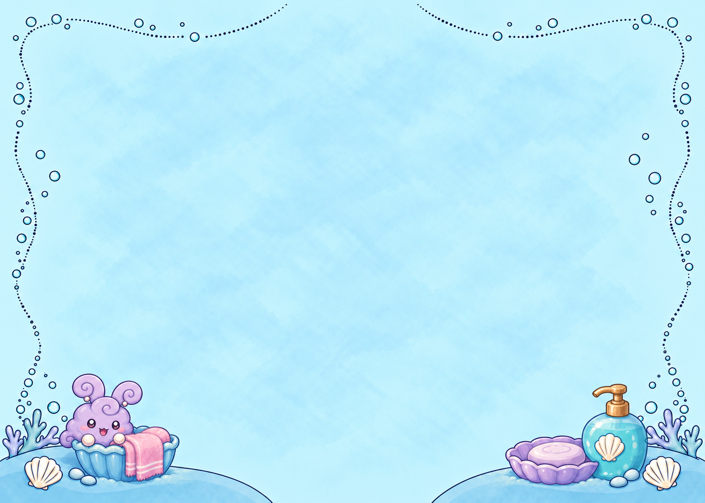
bank05 · Earlier bank study failed strict lower15%/12% geometry or weaker event-specific clarity; selected measured native revision supersedes it.
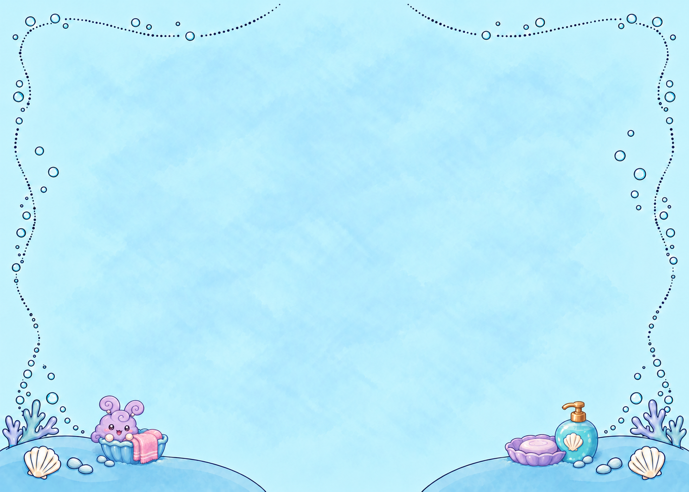
bank05_small · Earlier bank study failed strict lower15%/12% geometry or weaker event-specific clarity; selected measured native revision supersedes it.
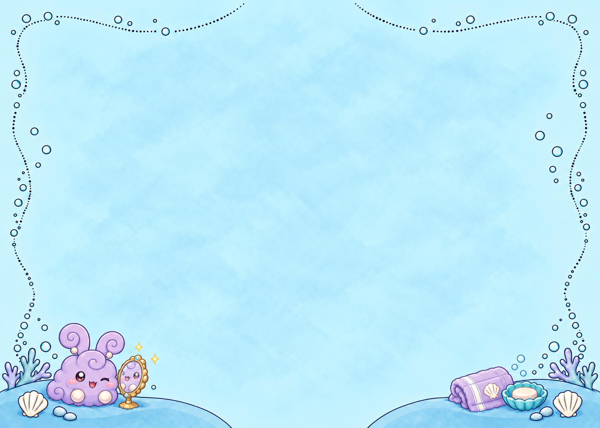
bank07 · Earlier bank study failed strict lower15%/12% geometry or weaker event-specific clarity; selected measured native revision supersedes it.
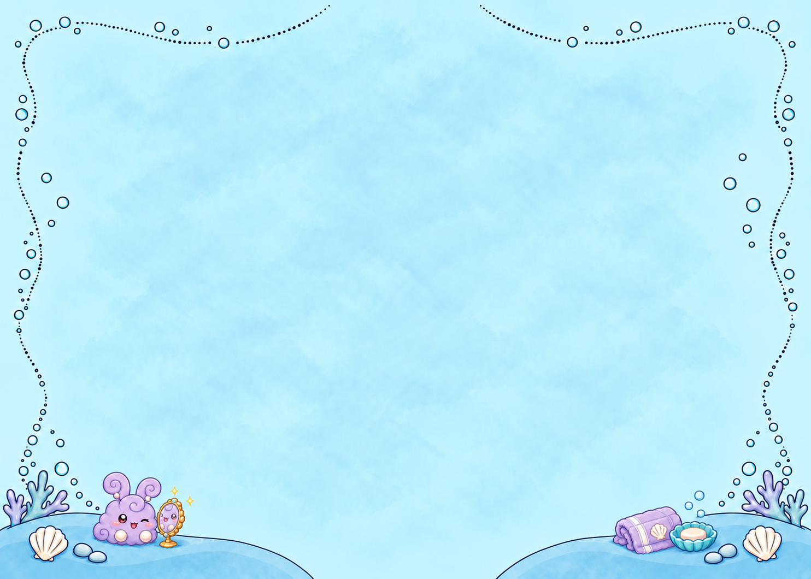
bank07_small · Earlier bank study failed strict lower15%/12% geometry or weaker event-specific clarity; selected measured native revision supersedes it.
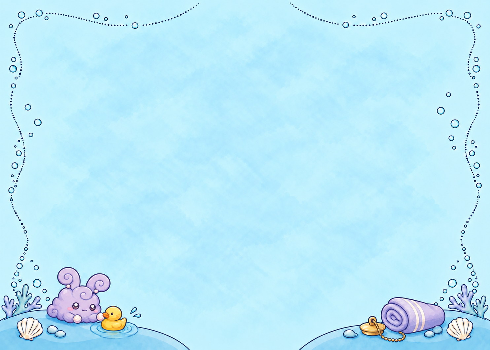
bank08 · Earlier bank study failed strict lower15%/12% geometry or weaker event-specific clarity; selected measured native revision supersedes it.
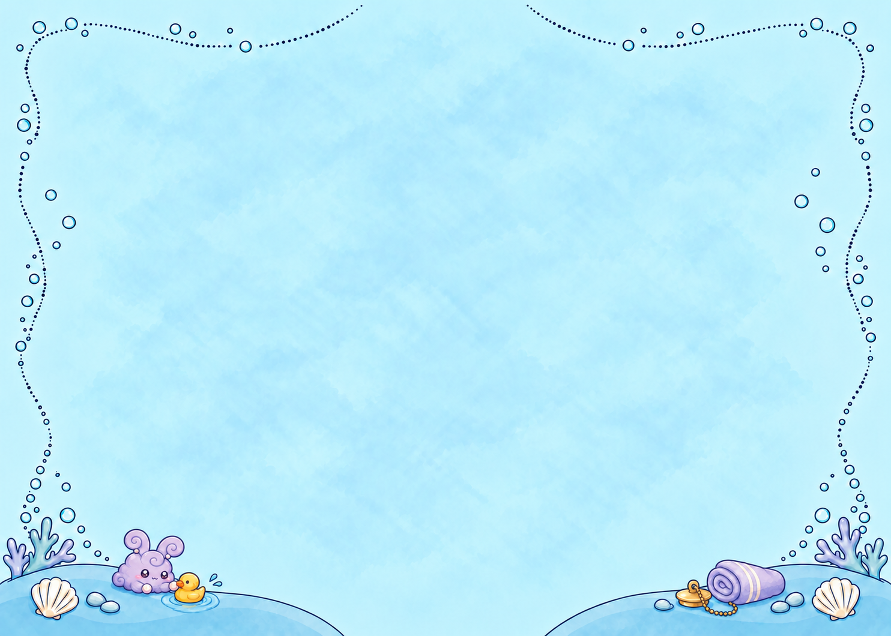
bank08_small · Earlier bank study failed strict lower15%/12% geometry or weaker event-specific clarity; selected measured native revision supersedes it.
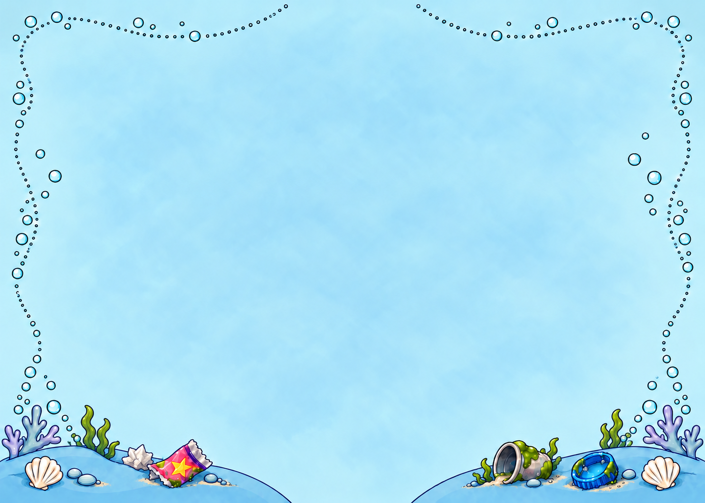
bank11 · Earlier bank study failed strict lower15%/12% geometry or weaker event-specific clarity; selected measured native revision supersedes it.
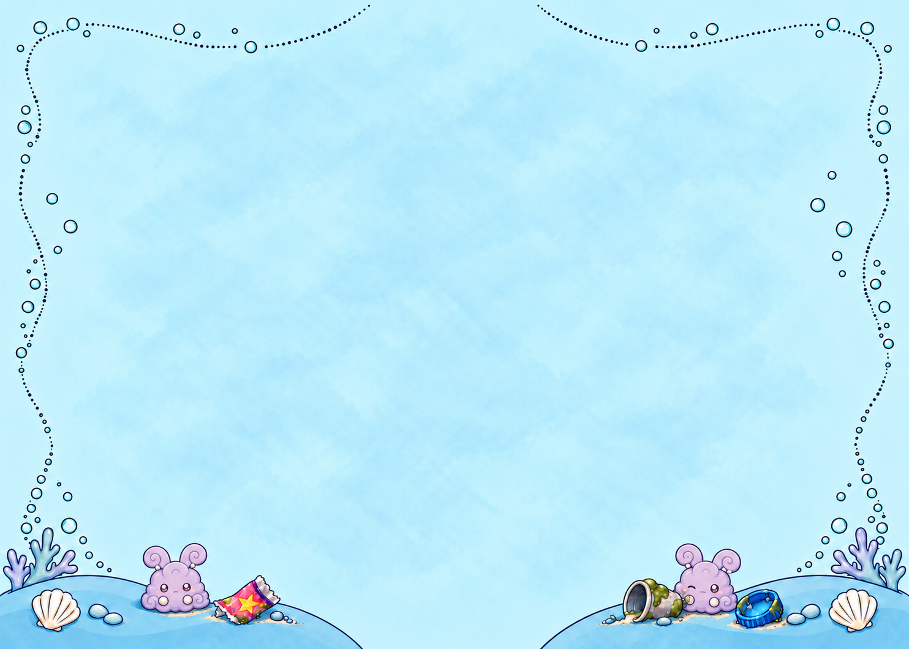
bank11_small · Earlier bank study failed strict lower15%/12% geometry or weaker event-specific clarity; selected measured native revision supersedes it.
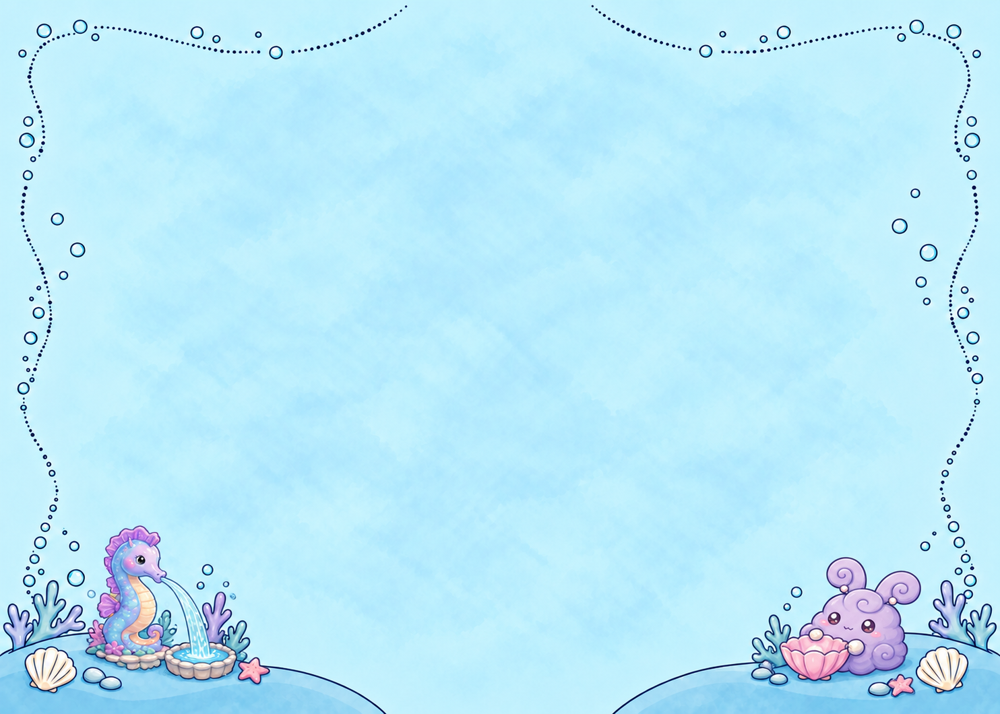
bank16 · Earlier bank study failed strict lower15%/12% geometry or weaker event-specific clarity; selected measured native revision supersedes it.
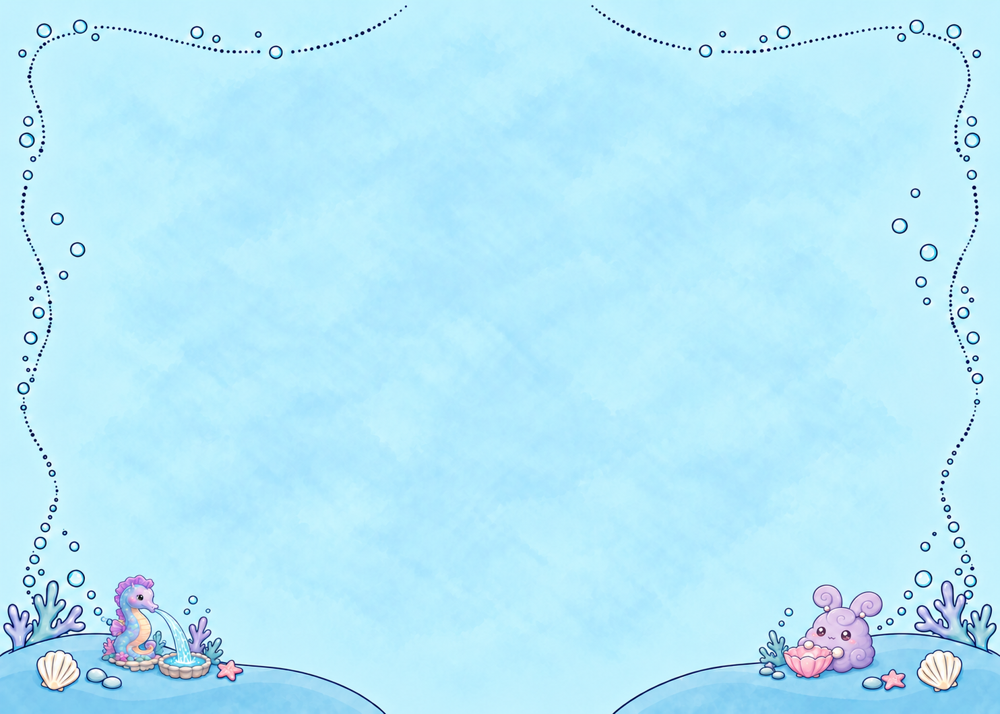
bank16_small · Earlier bank study failed strict lower15%/12% geometry or weaker event-specific clarity; selected measured native revision supersedes it.
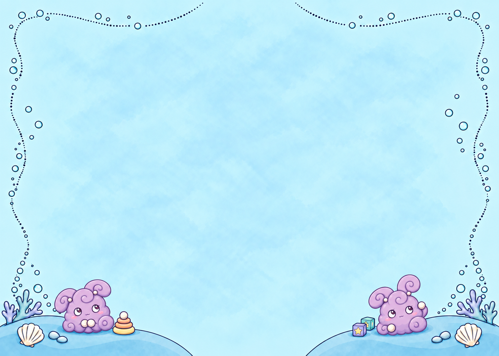
bank20 · Earlier bank study failed strict lower15%/12% geometry or weaker event-specific clarity; selected measured native revision supersedes it.
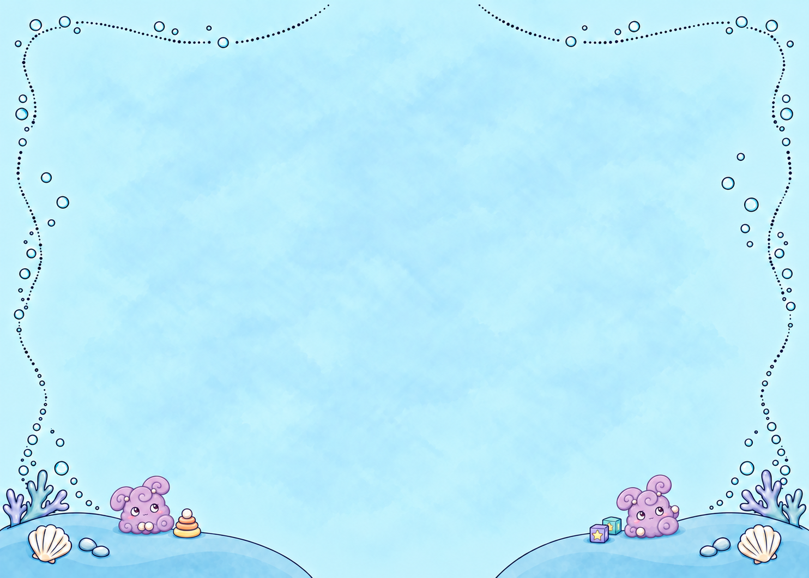
bank20_small · Earlier bank study failed strict lower15%/12% geometry or weaker event-specific clarity; selected measured native revision supersedes it.
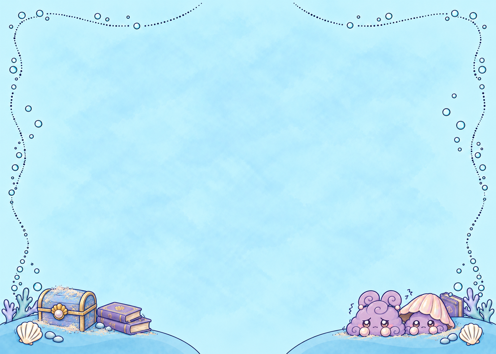
bank24 · Earlier bank study failed strict lower15%/12% geometry or weaker event-specific clarity; selected measured native revision supersedes it.
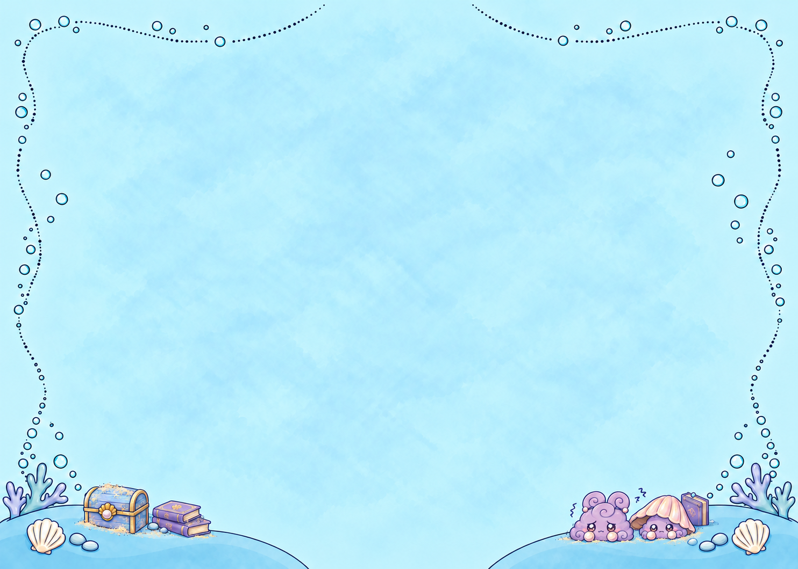
bank24_small · Earlier bank study failed strict lower15%/12% geometry or weaker event-specific clarity; selected measured native revision supersedes it.bank25 · Earlier bank study failed strict lower15%/12% geometry or weaker event-specific clarity; selected measured native revision supersedes it.bank25_small · Earlier bank study failed strict lower15%/12% geometry or weaker event-specific clarity; selected measured native revision supersedes it.bank30 · Earlier bank study failed strict lower15%/12% geometry or weaker event-specific clarity; selected measured native revision supersedes it.bank30_small · Earlier bank study failed strict lower15%/12% geometry or weaker event-specific clarity; selected measured native revision supersedes it.bank31 · Earlier bank study failed strict lower15%/12% geometry or weaker event-specific clarity; selected measured native revision supersedes it.bank31_small · Earlier bank study failed strict lower15%/12% geometry or weaker event-specific clarity; selected measured native revision supersedes it.bank31_tiny · One ear remained above the strict bottom15% limit; final candidate was generated and measured.caption06 · The first composed mask made a visible floor boundary; floor06_final follows grout and the tub base instead.ceiling27 · Full-page assembly showed a duplicated partial chandelier and horizontal join; reuse approved_scrub_ceiling instead.ceiling28 · Full-page assembly showed a discontinuous architectural join; reuse approved_scrub_ceiling instead.ceiling29 · Full-page assembly showed a duplicated partial chandelier and horizontal join; preserve canonical landing with approved_scrub_ceiling instead.neck19 · The first tiny costume edit retained the pendant; neck19_final replaces it.